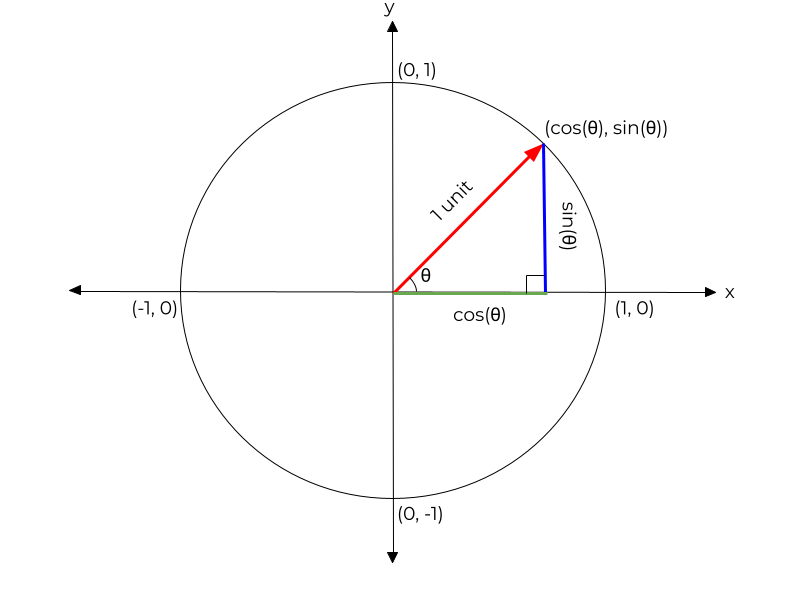
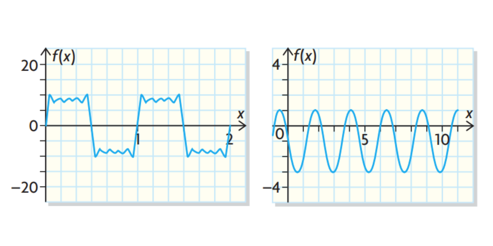
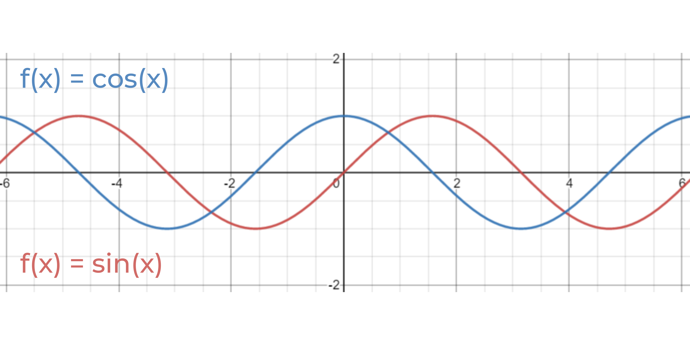

Trigonometric Ratios
Basic Trigonometric Ratios For Right Angle Triangles
In trigonometry, there are ratios that help with determining the ratio of
one side in a right angle triangle in relation to another side.
For instance, tan 40o = 0.84 (means when the angle is 40o the opposite side is 0.84 times as big as the adjacent side).
The basic trigonometric ratios (tangent, sine, cosine) and their reciprocals (cotangent, cosecant, secant) are listed below.

Special Triangles
When working with the angles 30o, 45o, and 60o, it can be quite pleasant as they will always have exact trigonometric ratios values (as displayed below). These angles appear in isosceles right triangles and half-equilateral triangles with right angles. Since these angles are so pleasant, mathematicians decided to give them a name befitting of their status: special triangles.


Trigonometric Ratios for Angles Greater than 90o
Before getting started with this, it's important to go through a couple of key terms and concepts:


Now, why is all this important? Well, now that we've moved on from simply working only in the first quadrant, this chapter introduces the idea of equivalent trigonometric ratios. This probably still doesn't make sense, so take a look at the unit circle below:

Unit circles are useful for helping to determine the ratios of any given angle.
The radius of the entire circle is 1 unit. This means that the hypotenuse of any right
triangle created in this unit circle will be equal to 1!
Consequently, if you consider the ratios of sin and cos; they are equivalent to opposite/hypotenuse
and adjacent/hypotenuse, respectively. Now that the hypotenuse is equivalent to 1, that means the
new ratios of sin will always just be sin(θ) = opposite and cos(θ) = adjacent! This is why you can now say that cos(θ)
represents the adjacent side, and sin(θ) represents the opposite side. Note that it can be quite useful to think of sin as percent
"upness" and cos as percent "rightness", because placing the cosine, for instance, into the negative quadrants (ie. quadrant 2) can cause it
to become negative cos (-cos).
But now consider the 2 angles shown below on the unit circle:
Whoa! Now there are 2 different angles (θ and 180o - θ), but they have the same sin ratio/the same heights! This concept can easily be represented by the equations below:


Evaluating Trigonometric Ratios for Any Angle Between 0o and 360o
Whenever you work with angles greater than 90o, it is always a good idea to draw out the unit circle and draw where
the angle lies. This is because if you receive a question such as cos(θ) = 0.6951, there is now the possibility of 2 angles
giving the same ratio.
Notably, one also needs to be conscious of when sin, cos and tan may have negative values for certain angles. A great way of
remembering which ones are positive where, can be using the CAST rule:

Another way of thinking about it, is considering the percent upness for sin and percent rightness for cos.
If the angle's terminal arm is located above the x-axis, sin is more up and therefore is positive. Vice versa,
if the arm is below the x-axis, sin is more down and therefore is negative.
Same applies for cos; if the arm is located to the right of the y-axis, cos is more right and therefore is positive. If the arm is on the left, cos is more left
and therefore is negative.
When considering if tan is negative or not, simply think if sin or cos are negative or positive in the particular quadrant.
If both are positive or negative, then tan is positive. Otherwise, tan will be negative.
Trigonometric Identities
Trigonometry just got more "fun"! Introducing identities: a general mathematical expression that holds true for all values of a given variables,
with the exception of any restrictions (ie. values that cause denominators to be 0).
Identities are useful when solving certain geometric problems. Below are several identities (note that there are literally so many, but these are the
ones to focus on during in this chapter):

The Sine Law
The Sine Law states that in any triangle, the ratios of each side to the sine of its opposite angle are equal:


Though the Sine Law is useful for a lot of triangles, it becomes difficult to use
when solving for an SSA (side, side, angle) triangle. This introduces the idea of ambiguous cases; when given an SSA triangle, the Sine Law may lead to 0, 1, or 2
possible triangles. This is depicted below, with the assumption that angle A is acute, and b and a are known. The height, h, is equivalent to bsin(A).

Note that when trying to find the 2 different triangles for the last case, it's important to consider that the sides a and a' are equivalent
and they create an isosceles triangle with each other. This can allow you to find the angle formed by A and a'.
The other instance, where angle A is obtuse, is shown below.

The Cosine Law
Cosine law can be used if you know all 3 sides and you'd like to find an angle, or if you know 2 sides and the angle between them. It states that:

Sinusoidal Functions
Periodic Functions and Their Properties
Periodic functions refer to any functions whose graph repeats at regular intervals. They do not necessarily need to look like a smooth sine wave; they can also look like the examples below:
Some other important terminology for this chapter:
Properties of Sinusoidal Functions
Sinusoidal functions are periodic functions, but they differ in that they always look like smooth
symmetrical waves. Any portion of the wave should have the ability to be horizontally translated and match up onto another portion of the graph.
Notably, all sinusoidal functions are created by transforming the graphs of f(x) = sin(x) or f(x) = cos(x). Thus, it's important to review the properties of both functions!
With the graph of f(x) = sin(x):
With the graph of f(x) = cos(x):
If you were to graph both sin and cos on the same graph, you can see that they look essentially identical except for the fact that the cosine wave is translated 90o to the left of the sine wave.
Transformations of Sinusoidal Functions
Consider the transformation variables mentioned before:
These can be used again with sinusoidal functions! The new transformation formula now looks like f(x) = asin(k(x - d)) + c and f(x) = acos(k(x - d)) + c.
Notably, there are a few helpful tips to know when translating sinusoidal functions.